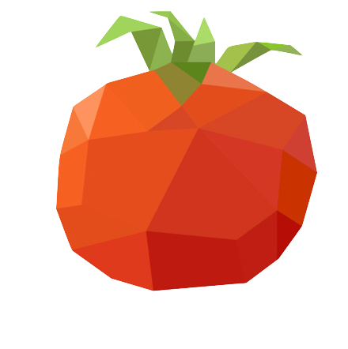

Дерево растет
по мере выполнения помидорок
Закрыть
Pomodoro Timer
"ПОСТАНОВКА ЦЕЛЕЙ ЯВЛЯЕТСЯ ПЕРВЫМ ШАГОМ НА ПУТИ
ПРЕВРАЩЕНИЯ МЕЧТЫ В РЕАЛЬНОСТЬ"
Приветствуем, !
Следите за своим прогрессом c помощью нашего приложения

00:00
Время работы
00 мин
Время отдыха
00 мин
Список "помидор"
Добавить- Прочитать учебную литературу
- Пересчитать затраты на ремонт
- Пробежка вдоль канала
- Поработать над проектом
Метод «Помидора» — техника управления временем, предложенная Франческо Чирилло в конце 1980-х. Техника предполагает разбиение задач на 25-минутные периоды, называемые «помидоры», сопровождаемые короткими перерывами.
Продолжайте работать «помидор» за «помидором», пока все задачи не будут выполнены. Каждые 4 «помидора» делайте длинный перерыв (15-30 минут).